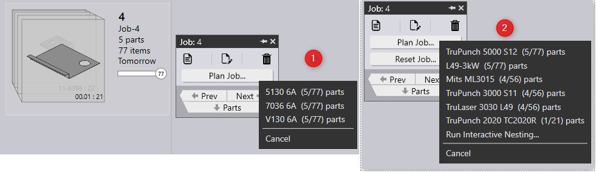

● Select a Job or a job-part and right click. Praxis shows the command panel for job/part.
● Click on the Plan Job…/Plan Part… panel command. Praxis displays the list of bend machines with unique and total quantities to be planned.

● Select the bend machine. And repeat these steps to select the cutting machine. The parts are queue up for the nesting. Praxis engines complete the nest, generate layouts and move the parts to the cutting queue. Job and part status are updated at every step and the whole process is reflected in the jobs page.
● Once a Job is nested, layout starts to appear in the layout page
Reset Part… command revokes all instances of a job-part from the existing nests. This command triggers a renest of the remaining parts and uses a smaller sheet if one is available to accommodate all the remaining parts. Overall, it tries to optimize the sheet usage even when a part is pulled back from existing nests. For the mixed mode layouts, parts from other jobs stay nested after the reset
In this image, when Reset Part is used for the Part 11-A-6149, the parts are withdrawn from Layout P145 and P146. As a result, all the remaining parts are nested in a single layout P146
Reset Job… command is less fancy and simply deletes all the nested layouts and resets all the parts back to the plannable state. If the layouts contain items from the other jobs – those parts are reset too.